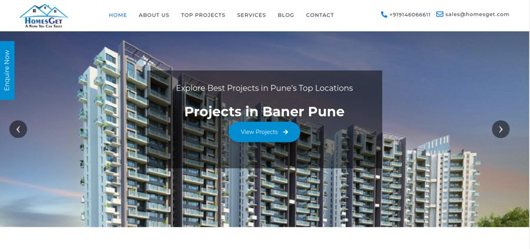

Business Website Design
Clean, responsive websites for companies, shops, service providers, schools, clinics, and local brands.
Shrikant Yadav · 12+ years in web development
I build clean, responsive, SEO-ready websites, WordPress sites, React/Next.js applications, and practical business web solutions through Shrimo Innovations.
About
I am Shrikant Yadav, founder of Shrimo Innovations. I help businesses, startups, schools, service providers, and local brands turn requirements into clean websites, web applications, dashboards, and digital product systems.
My work focuses on clear UI, responsive development, SEO-ready structure, performance, practical technology choices, and support after launch. The goal is simple: build websites that look professional, load fast, and help users take action.
Services
Focused services for businesses that need professional design, reliable development, and better online visibility.
Clean, responsive websites for companies, shops, service providers, schools, clinics, and local brands.
Custom WordPress websites, landing pages, business pages, and redesigns with practical admin control.
Fast frontend applications, dashboards, product pages, SaaS interfaces, and scalable business apps.
Conversion-focused landing pages for campaigns, service launches, lead generation, and product offers.
Improve old websites with better layout, mobile usability, content clarity, performance, and trust signals.
Technical setup for headings, metadata, schema, speed, alt text, indexing, and search-friendly pages.
Custom dashboards, portals, CRMs, school systems, listing platforms, and internal workflow tools.
Selected Work
Selected work only. Each item shows the type of problem I usually solve for businesses and digital products.
Company website and digital presence for software, web development, product systems, and business-focused delivery.
Digital visiting card and profile platform for professionals, agencies, businesses, and local service providers.
Online utility website for common document, photo, print, and local service tasks with simple public tools.
Structured local business listing platform with categories, search-friendly profiles, contact details, and review workflow planning.

Property-focused website interface with listings, business presentation, and WordPress-based development structure.
Skills
The stack changes by project, but the focus remains the same: stable code, clean UI, maintainable structure, and measurable user value.
HTML, CSS, JavaScript, React, Next.js
Node.js, PHP, APIs, authentication, integrations
WordPress websites, custom pages, business CMS workflows
MongoDB, MySQL, data structure planning
Technical SEO, schema, page speed, Search Console, analytics
Git, hosting, deployment, design-to-code workflow
How I Work
No unnecessary process. Just the right amount of planning, design, development, optimization, and support.
Clarify business goal, users, pages, features, and expected outcome.
Map the sitemap, content flow, tech stack, and delivery scope.
Create readable layouts, strong hierarchy, and clear conversion paths.
Develop fast, stable, mobile-friendly pages and reusable components.
Add metadata, schema, alt text, clean structure, and performance checks.
Deploy, review important links, and support improvements after launch.
FAQs
Short answers for common questions about website design, development, redesign, SEO setup, and contacting me.
Contact
Let’s discuss your project, current website, expected features, and the business goal behind it.
{kind=link}